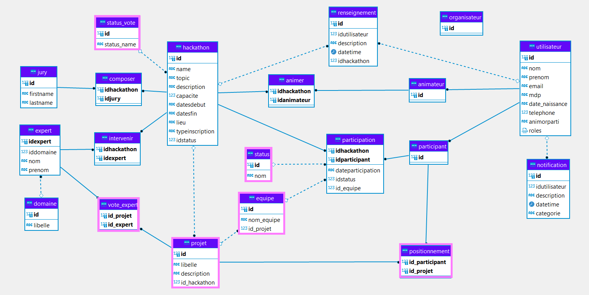

Hacka't Manage est notre troisième et dernière application du projet Hackat'Innov. Elle est développée
avec le framework Symfony sous l'éditeur PHPStorm.
La mission principale d'Hackat'Manage est de procéder au développement des étapes de choix de projets et de
lancement du hackathon.
On y retrouve les acteurs suivants : expert et animateur.
En comparaison aux deux autres applications, le code de départ ne nous est pas fourni.
En revanche, nous disposons toujours du même système de gestion de BDD PostgreSQL.
Une nouvelle fois, nous disposions de la même documentation qui nous avait servie pour l'application Hackat'Web et Hackat'Orga. Parmi les ressources, on y trouvait des détails quant à la phase de sélection des projets, de constitution des équipes et du vote des membres du jury. Voir la documentation.
Pour ce dernier sprint, un nouveau cahier des charges nous était attribué et contenait les nouveaux scénarios utilisateurs avec un niveau de priorité et un état. Notre objectif comme à chaque début de sprint est d'analyser le besoin imposé par le prestataire informatique à travers ces fonctionnalités. Cette étape est nécessaire pour bien cerner la demande de chaque users story.
Une nouvelle fois, rien ne change. Nous commençons par mettre en place et configurer notre environnement de développement.
Après avoir créé et configurer notre projet Hackat'Manage, nous avons créé le repository Framagit rattaché à ce dernier projet.
Ensuite, nous analysons les users story et nous commençons par schématiser les différentes pages ainsi que les noms des
fonctionnalités présentes à l'intérieur. En effet, nous l'avions notifié dans la rétrospective du sprint précédent.
Cela nous donne donc un visuel sur l'organisation et le cheminement à entreprendre
par la suite dans notre arborescence de code.
Une fois ce travail fait, nous commençons par nous attribuer quelques users story en fonction des acteurs : animateur et expert.
Cela nous aidera à individualiser au maximum la modification de fichier de code entre chaque membre de l'équipe.
Le fonctionnement en matière de réunions lors du sprint reste le même.
Symfony est un Framework MVC. Un framework permet principalement de s’assurer qu’une application est bien structurée,
qu’elle est maintenable et qu’il est possible de facilement la mettre à jour.
Nous avons vu le modèle MVC dans la première et la seconde application de ce projet. Pour rappel, c'est un modèle qui permet de séparer
la logique du code en trois parties distinctes : le Modèle pour l'accès aux données, la Vue pour l'affichage côté utilisateur et
le Controller qui permet le traitement et la redirection de route dans l'application.
Voici une description des moyens établie concernant la sauvegarde du projet et le déroulement de sa continuité.
Au cours du projet Hacka't Innov, nous utiliserons toujours Framagit pour le versionning de chacune de nos trois applications.
Pour rappel, nous réutilisons ici la même base de données PostgreSQL. Voici un aperçu BDD en cours de développement après l'ajout de nouvelles tables. Bien évidemment, certaines tables déjà existantes ont de nouveau été modifiées pour répondre aux besoins de cette dernière application. Il s'agit de la dernière version à jour.

Une nouvelle fois, nous avons choisi de rester sur l'utilisation de l'outil de suivie de projet Clickup.
Cependant, les avantages qu'on l'on avait auparavant n'étaient plus disponible, étant donné que l'on avait une version
gratuite de Clickup.
Cela ne nous a pas empêché d'avoir un visuel correct même s'il manquait certaines fonctionnalités telles que le niveau de
progression, l'état actuel du ticket ou bien le diagramme de GANTT.
En revanche, nous avons rajouté la fonctionnalité de temps de suivie
nous permettant de savoir le nombre d'heures passées pour chacune de nos fonctionnalités. L'estimation et le temps réel
passé à développer une tâche sont des éléments importants pour le suivie de réalisation du projet.
Une nouvelle fois, nous avons réalisé des schémas UML comme nous l'avons fait pour les autres applications. Voici les fonctionnalités que peut effectuer un organisateur quant à l'étape d'inscription d'un hackathon :

Pour ce tout dernier Sprint, mon équipe et moi-même avons fait des progrès quant au sprint précédent. Nous disposions de bases plutôt solides en ce qui concerne l'entraide et l'organisation.


PHPStorm
Symfony
DBeaver
PostgreSQL
Clickup
Framagit